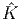

Benders Decomposition
John Mitchell
See Nemhauser and Wolsey, section II.3.7 and III.5.4, for more information.
Benders Decomposition reduces a mixed integer optimization problem with p continuous variables and n integer variables to one with just one continuous variable, and still n integer variables, but typically with an enormous number of constraints.
The initial problem is
|
| (1) |
where b ∈ ℝm and c, h, A, and G are all dimensioned appropriately.
For each possible choice of ∈ X, we could find the best choice for y by solving a linear program, so we could regard y as a function of x. We can then replace the contribution of y to the objective by a scalar variable representing the value of the best choice for a given . We start out with a crude approximation to this value, and then generate a sequence of dual solutions to tighten up the approximation.
Let x ∈ X. We denote the value of the best choice for y by zLP (x). We have
|
| (2) |
By LP duality, we can also write
|
| (3) |
Note that the feasible region Q for the dual problem does not depend on x. We denote the extreme points and extreme rays of Q as K and J respectively:
If the inner product between (b - Ax) and any ray rj is negative then z LP (x) = -∞. Equivalently, in this situation, problem (2) is infeasible, so x does not allow a feasible solution to the original problem (1). Thus, we have the valid constraints
|
| (4) |
that must be satisfied by any x that is feasible in (1).
If x satisfies (4) then the value of zLP (x) is given by
Thus, problem (1) can be written equivalently as
|
| (5) |
This problem has fewer variables than the original formulation (1), but it may have a huge number of constraints. Thus, these constraints are generated as needed, as cutting planes.
Let  ⊆ K and Ĵ ⊆ J denote the current known extreme points and extreme rays of Q, respectively. The current relaxation of (1) and (5) is then
|
| (6) |
The scalar variable t represents an estimate of zLP (x).
The algorithm can then be written: